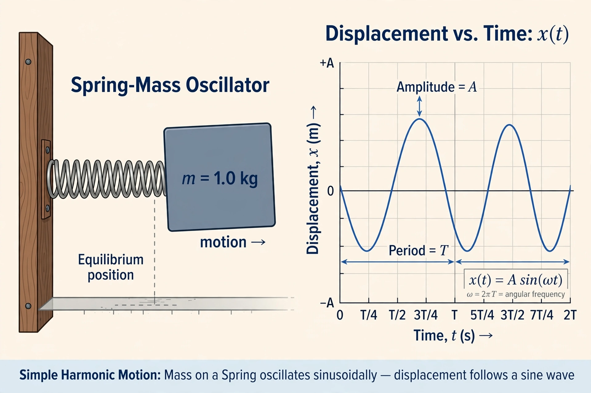

Harmonic oscillator
From Wikipedia, the free encyclopedia

The harmonic oscillator is a system that, when displaced from equilibrium, experiences a restoring force proportional to the displacement (Hooke's law, F = −kx) and oscillates sinusoidally. It is arguably the most important model in physics: pendulums, masses on springs, LC circuits, molecular vibrations, sound, lattice phonons and the quantised modes of the electromagnetic field are all harmonic oscillators, and any stable equilibrium can be approximated by one for small oscillations.
Classical oscillator
The equation of motion ẍ + ω₀²x = 0 has solutions of period T = 2π√(m/k), independent of amplitude (isochronism, approximately true for pendulums). Adding damping (−bẋ) gives decay and resonance phenomena; driving at the natural frequency produces the resonant amplification that engineers exploit (tuning circuits, MRI) and fear (bridge failures, though the famous Tacoma Narrows case was aeroelastic flutter, not simple resonance).
Quantum harmonic oscillator
Quantisation yields energy levels E = (n + ½)ħω — evenly spaced, with a zero-point energy ½ħω — and creation/annihilation operators that became the template for quantum field theory, where particles are excitations of oscillator-like fields. The model's solvability in both regimes is unique, making it physics' universal first example.